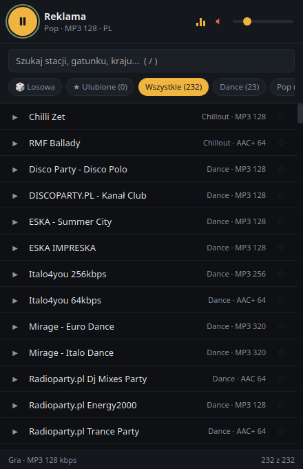

Antena to radio internetowe, które nie pożera Twojego komputera. 252 stacje, 30 gatunków,
ulubione i tytuł aktualnie grającego utworu — w jednym oknie 440×680 px. Bez kont, bez reklam,
bez chmury i bez node_modules.
Windows 10 / 11 — instalator .exe
Linux — .deb i AppImage
0stacji w bazie
0gatunków
~4%CPU podczas grania
3,3 MBrozmiar binarki
przewiń
Antena
wybierz stację z listy poniżej
Zatrzymane
Naprawdę gra w przeglądarce. Spróbuj: / szukaj · Space play · f ulubione · m cisza
01Funkcje
Wszystko, co potrzebne. Nic, co przeszkadza.
Antena nie próbuje być platformą. Jest radiem: włączasz, wybierasz stację, słuchasz.
252 stacje, 30 gatunków
78 polskich (RMF i wszystkie jego kanały, Zet, Chilli Zet, Eska, Antyradio, Radio 357,
Radio Nowy Świat, Radio Kampus, TOK FM, Wnet, Polskie Radio, stacje lokalne) oraz
zagraniczne — Radio Paradise, FIP, Deutschlandfunk, NTS, Radio Swiss Pop, Venice Classic
i osiem kanałów SomaFM.
baza: 30 KB, generowana z Radio-Browser i przetestowana
Szukaj i filtruj bez opóźnień
Wyszukiwanie po nazwie, gatunku i kraju oraz chipsy gatunków. Lista jest budowana raz —
filtrowanie to tylko przełączanie klasy CSS, więc nic się nie przerenderowuje.
content-visibility: auto
Ulubione
Gwiazdka klikiem albo klawiszem f. Lista zapamiętana lokalnie, bez logowania i chmury.
Tytuł grającego utworu
Metadane ICY/Icecast w pasku u góry, jedno krótkie zapytanie co 15 s. Bez pollowania w tle.
Klawisze multimediów
Media Session API — gdy WebKitGTK eksponuje MPRIS, stacja pojawia się też w panelu systemowym.
Pamięta wszystko
Głośność, wyciszenie i ostatnia stacja wracają po ponownym uruchomieniu.
Zero frameworków
~34 KB plików interfejsu, brak npm, brak bundlera, brak dev-serwera. UI jest wkompilowane w binarkę.
HTML + CSS + JS
Świadomie bez animacji
Animowany korektor wymuszał w WebKitGTK ciągłe odświeżanie okna. Wskaźnik jest statyczny — i dlatego radio zjada ~4% rdzenia.
Prywatność domyślnie
Brak kont, brak telemetrii. CSP blokuje wszystko poza własnymi plikami i strumieniami audio,
a uprawnienia Tauri są ograniczone do core:default.
default-src 'self'
Własna stacja w jednej linii
Dopisz wpis do tablicy w ui/stations.js — nowy gatunek automatycznie pojawi się jako chip.
Stream padł? Nazwa robi się czerwona, a status pokazuje komunikat błędu.
{ n, u, g, k, b, c }
0stacji
0gatunków
0stacji z Polski
0KBcały interfejs

Prawdziwe okno aplikacji — 440 × 680 px. Zrzut z wcześniejszego wydania; dziś baza liczy 252 stacje.
02Interfejs
Ciemny, kompaktowy, przyjemnie szybki.
Okno 440×680 px, jeden element <audio> na całe radio i cztery sekcje, które
ogarniasz w pięć sekund.
Play, wyszukiwanie, chipsy, lista
Nic więcej nie trzeba — i nic więcej nie ma.
Statyczny wskaźnik „gra”
Celowa decyzja: brak animacji oznacza brak ciągłego odświeżania okna.
preload="none"
Przed kliknięciem nic się nie łączy z internetem. Zero ruchu w tle.
Struktura projektu, którą przejrzysz w minutę
ui/ to frontend, src-tauri/ to okno i odczyt metadanych ICY w Ruście.
03Platformy
Windows i Linux. Ta sama binarka z Rust.
Cele bundli są zdefiniowane w tauri.conf.json, więc na każdym systemie powstaje dokładnie
to, co trzeba: na Linuksie .deb i AppImage, na Windowsie instalator .exe (NSIS).
Windows 10 / 11
Instalator NSIS — standardowy, cichy kreator. Bez zależności do doinstalowania.
Pamięć (~0,4 GB RSS) to głównie współdzielone biblioteki WebKitGTK — każda aplikacja Tauri
na Linuksie korzysta z systemowej przeglądarki.
06Skróty klawiszowe
Sterowanie bez myszki.
Wciśnij klawisz — zobaczysz go tutaj i usłyszysz w makiecie, jeśli jest na ekranie.
Spaceodtwórz / zatrzymaj
↑poprzednia stacja (z uwzględnieniem filtrów)
↓następna stacja
/przejdź do wyszukiwania
fdodaj / usuń z ulubionych
mwycisz
Escwyczyść wyszukiwanie
07FAQ
Uczciwe pytania, uczciwe odpowiedzi.
Dlaczego nie ma Polskiego Radia Trójki ani stacji HLS?
Odtwarzanie robi WebKitGTK przez GStreamer, a strumienie HLS (.m3u8) nie działają w tym stosie. Antena wybiera więc tylko strumienie progresywne: MP3, AAC/AAC+ oraz OGG/Opus. Dlatego nie ma np. Trójki, która nadaje wyłącznie w HLS.
Dlaczego proces zajmuje ~0,4 GB RAM?
To charakterystyka WebKitGTK, nie samej Anteny. Każda aplikacja Tauri na Linuksie używa systemowej przeglądarki i dzieli z nią biblioteki (proces główny ~134 MB, proces strony ~229 MB, sieciowy ~65 MB). Sama binarka Anteny ma 3,3 MB.
Stacja nie gra i nazwa zrobiła się czerwona. Co dalej?
Adresy strumieni zmieniają się z czasem i część z nich po prostu umiera. Antena pokazuje to od razu: nazwa robi się czerwona, a w pasku dolnym pojawia się komunikat błędu. Wybierz inną stację albo dopisz własny, świeży adres w ui/stations.js.
Jak dodać własną stację?
Otwórz ui/stations.js i dopisz wpis na końcu tablicy: { n: "Nazwa", u: "https://adres/strumienia.mp3", g: "Rock", k: "MP3", b: 128, c: "PL" }. Nowy gatunek automatycznie pojawi się jako chip. Po zmianach w ui/ wystarczy ponownie uruchomić ./run.sh.
Czy muszę coś instalować razem z aplikacją?
Na Windowsie nie — instalator NSIS wystarczy. Na Linuksie paczka .deb dociągnie GTK3 i WebKitGTK 4.1, ale kodeki GStreamera (mp3/mpg123 oraz aac/faad) warto mieć zainstalowane, bo bez nich dźwięk nie zagra. Komendy znajdziesz w zakładce „Zależności”.
Będzie wersja na macOS?
Cele bundli w tauri.conf.json zawierają już dmg. macOS trzeba jednak zbudować na macOS — Apple nie udostępnia swojego toolchainu na Linuksa. Wystarczy dopisać jedną pozycję do macierzy w .github/workflows/build.yml; komentarz w pliku pokazuje jak.
Czy aplikacja zbiera jakieś dane?
Nie. Brak kont, brak telemetrii, brak synchronizacji. CSP blokuje wszystko poza własnymi plikami i strumieniami audio, a uprawnienia Tauri są ograniczone do core:default. Ulubione i głośność siedzą lokalnie na Twoim dysku.
08Wsparcie
Podoba Ci się Antena? Postaw kawę autorowi.
Projekt tworzę sam — kod, baza 252 stacji i pilnowanie, czy strumienie jeszcze żyją.
Jeśli radio umila Ci dzień, dorzuć się do kolejnych wydań na Ko-fi.